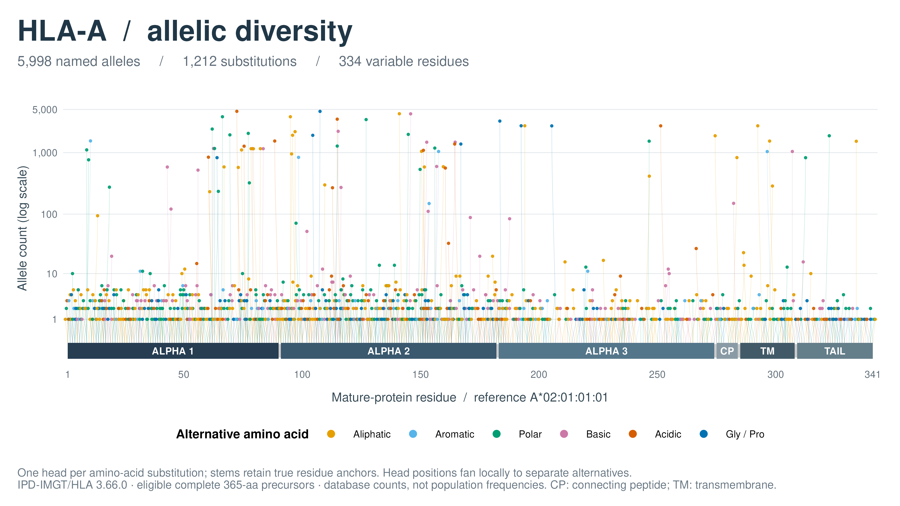
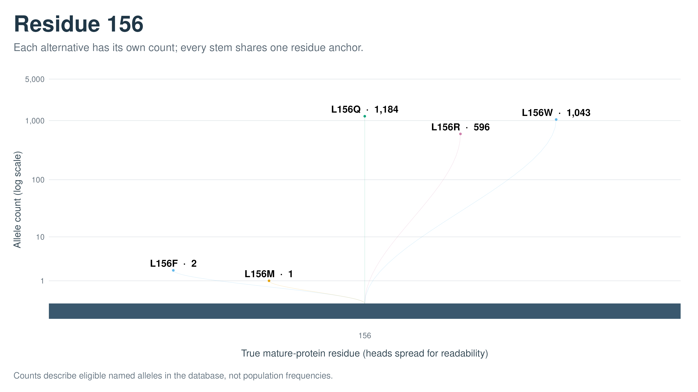
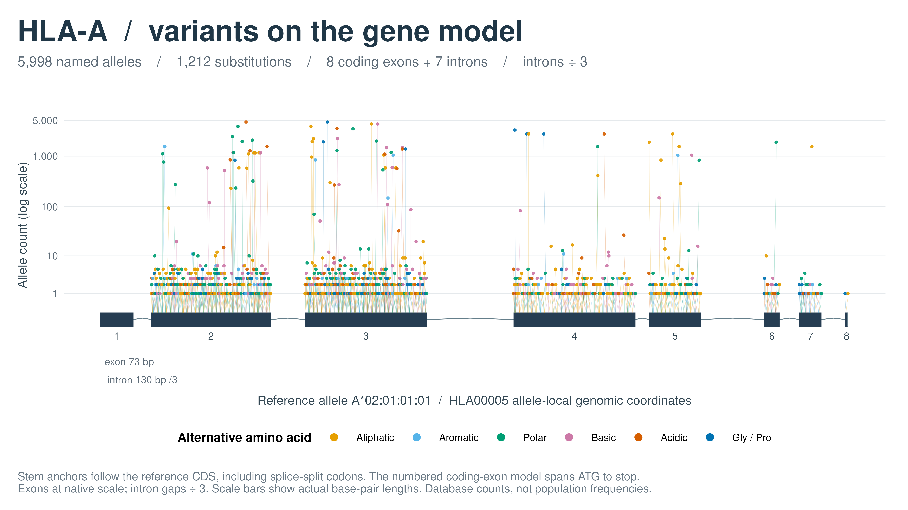

HLA-A Protein Variants: Dense Multiallelic Lollipops
Source:vignettes/hla-a-lollipop-demo.Rmd
hla-a-lollipop-demo.RmdA dense landscape of HLA-A variation
This example summarizes 5,998 named HLA-A alleles, an MHC class I heavy chain, from IPD-IMGT/HLA release 3.66.0. Comparison with A*02:01:01:01 produces 1,212 amino-acid substitutions at 334 mature-protein residues. Each substitution has its own head, coloured by the alternative amino acid’s chemical group. Counts span 1–4,667, so logarithmic heights keep both rare and common alternatives visible.
The analysis includes every sequence in the pinned release that meets these explicit criteria:
- A complete 365-residue precursor using only the twenty standard amino acids.
- An allele name ending in a numeric field, excluding names with letter suffixes.
- The same gap pattern as the reference in the official protein alignment.
All 5,998 sequences passing the first two criteria also pass the alignment check. Thus, equal length is verified against aligned residue coordinates, rather than assumed to imply positional correspondence. Partial sequences, other protein lengths, and ambiguous residues are outside this example’s scope.
Each named allele counts once, including named alleles encoding identical proteins. The panel contains 3,188 distinct mature protein sequences, but is not deduplicated to those proteins. Counts reflect database representation, not individuals, independent observations, or population frequencies.
Load the offline inputs
library(ggexon)
library(ggplot2)
demo_dir <- system.file("extdata", "hla_a_lollipop", package = "ggexon")
source(file.path(demo_dir, "load-hla-a-example.R"), local = TRUE)
source(file.path(demo_dir, "plot-hla-a-example.R"), local = TRUE)
hla <- load_hla_a_example(demo_dir)
data.frame(
named_alleles = nrow(hla$alleles),
distinct_mature_proteins = hla$distinct_mature_proteins,
substitutions = nrow(hla$mutations),
variable_residues = length(unique(hla$mutations$position))
)
#> named_alleles distinct_mature_proteins substitutions variable_residues
#> 1 5998 3188 1212 334The allele manifest retains every exact name and sequence checksum. The original FASTA records are unchanged and bundled with gzip compression. The loader and plotting functions are example helpers, not new exported package functions.
Protein coordinates and structural regions
The original precursor sequences include a 24-residue signal peptide. The plot uses mature-protein positions 1–341, so mature residue 156 is precursor residue 180. The signal peptide is excluded from comparison, while the original bundled sequences retain it.
Structural boundaries come from the bundled UniProt P04439 snapshot, shifted by 24 residues. Its displayed sequence is A*03:01; only the shared structural boundaries annotate this equal-length HLA-A track. All substitutions are computed against the selected A*02:01 reference.
| Protein region | Start | End |
|---|---|---|
| Alpha-1 | 1 | 90 |
| Alpha-2 | 91 | 182 |
| Alpha-3 | 183 | 274 |
| Connecting peptide | 275 | 284 |
| Transmembrane | 285 | 308 |
| Cytoplasmic | 309 | 341 |
CP denotes the connecting peptide, TM the transmembrane segment, and TAIL the cytoplasmic region. These are structural regions rather than all globular domains. Different DNA variants producing the same amino-acid change are grouped into one substitution. The protein view uses amino-acid coordinates; the gene-model section below projects them to the exact reference allele’s coding structure.
Dense lollipop summary
plots <- plot_hla_a_example(hla)
plots$overview
All eligible named HLA-A alleles from the pinned release. Every substitution remains a separate head; colours describe the alternative amino acid, not its prevalence.
The plot has three deliberate layout choices:
-
Logarithmic counts. Head height is
log10(allele_count + 1), matching ggexon’smutation_y_trans = "log10"convention. Axis ticks show the original counts. This prevents thousands of common-allele counts from flattening singleton and low-count substitutions into the backbone. - Bounded local fanning. Heads at the same residue spread symmetrically within at most 1.6 residue units of that position. Fanning restarts at each residue, so dense early sites cannot push later heads beyond the protein. Every stem remains anchored to the actual residue.
- Chemical-group colour. The alternative residues are grouped as aliphatic (A/V/I/L/M), aromatic (F/W/Y), polar (S/T/N/Q/C), basic (K/R/H), acidic (D/E), and glycine/proline (G/P). Exact alternative identities remain in the table.
At this density, some nearby heads can visually overlap, especially at equal counts. No substitutions are filtered or sampled out of the plot. The close-up and exported table provide exact values when the overview is too crowded.
The shared helper uses protein_lollipop_data() to
prepare the track and count heights. The key preparation arguments
are:
prepared <- protein_lollipop_data(
hla$mutations,
domains = hla$domains, domain = "domain",
protein_length = hla$protein_length, protein_start = 1,
mutation_y_by = "allele_count",
mutation_y_trans = "log10",
mutation_y_range = range(log10(hla$mutations$allele_count + 1)),
spread_threshold = 0
)hla_a_lollipop_layout() then applies symmetric offsets
to the head coordinates and recomputes each curve from its original
anchor. geom_protein_lollipop() draws the structural track;
ordinary ggplot2 line and point layers draw the prepared stems and heads
with group colours and transparency. This bounded fanning is specific to
this example; the package’s default spreading API is unchanged.
Multiple alternatives at residue 156
The reference has L at mature residue 156. In this expanded panel there are five alternative amino acids, each counted separately:
focus_states <- hla$states[hla$states$position == hla$focus_position, ]
knitr::kable(focus_states[, c("ref", "alt", "is_reference", "allele_count")],
col.names = c("Reference", "Observed", "Reference match", "Named alleles"))| Reference | Observed | Reference match | Named alleles | |
|---|---|---|---|---|
| 856 | L | F | FALSE | 2 |
| 857 | L | L | TRUE | 3172 |
| 858 | L | M | FALSE | 1 |
| 859 | L | Q | FALSE | 1184 |
| 860 | L | R | FALSE | 596 |
| 861 | L | W | FALSE | 1043 |
There are 3,172 reference matches, plus L156F (2), L156M (1), L156Q (1,184), L156R (596), and L156W (1,043). These sum to 5,998. Reference matches remain in the state table and are not substitution heads.
plots$focus
Five amino-acid alternatives sharing one residue anchor. Heights use the same log10(count + 1) convention as the overview; labels show exact original counts.
Each summary row includes up to three example allele names. The complete manifest and source sequences retain all eligible alleles without producing unwieldy lists of thousands of names in each table cell.
Project onto the reference exon–intron model
The same 1,212 substitutions can be placed above the eight coding exons and seven introns of A*02:01:01:01. The bundled IPD HLA00005 reference snapshot comes from the same database release. Its spliced CDS translates exactly to our 365-residue reference precursor followed by a stop codon.
The genomic view uses allele-local HLA00005 coordinates, not GRCh38 chromosome coordinates. It shows the coding region from ATG to stop; untranslated flanks are outside the displayed model. Other alleles’ substitutions are projected onto this one reference structure, not onto separate allele-specific intron models.
source(file.path(demo_dir, "project-hla-a-example.R"), local = TRUE)
gene <- load_hla_a_gene_model(hla, demo_dir)
knitr::kable(gene$structure, col.names = c("Feature", "Number", "Start", "End", "Length (bp)"))| Feature | Number | Start | End | Length (bp) |
|---|---|---|---|---|
| exon | 1 | 301 | 373 | 73 |
| intron | 1 | 374 | 503 | 130 |
| exon | 2 | 504 | 773 | 270 |
| intron | 2 | 774 | 1014 | 241 |
| exon | 3 | 1015 | 1290 | 276 |
| intron | 3 | 1291 | 1890 | 600 |
| exon | 4 | 1891 | 2166 | 276 |
| intron | 4 | 2167 | 2265 | 99 |
| exon | 5 | 2266 | 2382 | 117 |
| intron | 5 | 2383 | 2820 | 438 |
| exon | 6 | 2821 | 2853 | 33 |
| intron | 6 | 2854 | 2995 | 142 |
| exon | 7 | 2996 | 3043 | 48 |
| intron | 7 | 3044 | 3212 | 169 |
| exon | 8 | 3213 | 3217 | 5 |
load_hla_a_gene_model() attaches a
SynProteinMutationAnnotation to a
SynIndividual containing the reference GFF3, then calls
project_mutations_to_genome(). Projection uses
precursor positions, so the loader adds 24 to each
mature residue first. A codon crossing a splice junction is represented
by multiple exonic fragments. Its lollipop anchors to the longest
fragment, rather than an interval midpoint that could fall inside an
intron.
For example, mature residue 1 spans reference genomic base 373 in exon 1 and bases 504–505 in exon 2. Its anchor is 504.5, on the exonic two-base fragment.
genomic_plot <- plot_hla_a_gene_example(hla, gene, intron_factor = 3)
genomic_plot$plot
Splice-aware projection onto the exact A*02:01:01:01 coding-exon model. Exon lengths are unchanged and each intron is displayed at one-third its original length.
The scale configuration is:
ggexon(exons, aes(xmin = xmin, xmax = xmax, ymin = ymin,
transcripts = transcripts, strand = strand,
type = type, track = track, group = group)) +
geom_exon2(compress_introns = FALSE, intron_shape = "chevron") +
# Add the projected stems and heads, then apply one shared genomic transform:
scale_x_ggexon_genomic(
intron_factor = 3,
guide = guide_x_ggexon_piecewise(by = "panel")
)compress_introns = FALSE disables
geom_exon2()’s own compression so the scale is applied
once, consistently to exons, introns, stems, heads, and
exon labels. An intron of 600 bp therefore occupies 200 exon-scale
units; a 276-bp exon still occupies 276. Set
intron_factor = 1 for an uncompressed view.
Rectangles run from start - 0.5 to
end + 0.5, the edges of the first and last base. This makes
a 73-base exon exactly 73 coordinate units wide and the first intron
exactly 130, avoiding an off-by-one error from inclusive endpoints.
Codon anchors retain their original genomic base-centre coordinates. The
guide reports 73 bp for the representative exon and
130 bp /3 for the intron.
Reproduce and customize
From the repository root:
python3 data-raw/hla_a_lollipop/build-hla-a-demo.py
Rscript data-raw/hla_a_lollipop/verify-hla-a-demo.R
Rscript data-raw/hla_a_lollipop/verify-hla-a-gene-model.R
Rscript data-raw/hla_a_lollipop/render-hla-a-figure.RThe builder pins the source commit and checks all selected sequences
against the official gapped alignment. The renderer exports overview and
close-up and gene-model vector PDF and PNG files,
substitution counts, projected codon segments, and all residue-state
counts to data-raw/hla_a_lollipop/preview.
Edit hla_a_plot_parameters in
plot-hla-a-example.R to adjust canvas dimensions, font
size, head size, stem opacity, or the maximum local fan width. The
default 240 × 135 mm canvas provides space for the dense overview. Every
substitution is drawn in both the vector and raster exports.
Sources and attribution
-
IPD-IMGT/HLA
release 3.66.0, pinned
source repository. Original FASTA records retain their headers,
sequences, and line wrapping.
IPD-LICENCE.mdretains the data terms; the package MIT license does not replace these terms. Counts are computed analyses of original records. - Barker DJ et al. The IPD-IMGT/HLA Database: recent developments in sequence submission. Nucleic Acids Research (2026), 54(D1): D1152–D1158.
- Robinson J, Barker D, Marsh SGE. 25 years of the IPD-IMGT/HLA Database. HLA (2024), 103(6): e15549.
- Robinson J et al. IMGT/HLA — a sequence database for the human major histocompatibility complex. Tissue Antigens (2000), 55:280–287.
- UniProt P04439: shared structural regions, under CC BY 4.0. The original snapshot and source SHA-256 values are bundled.
- IPD alignment conventions: mature-protein numbering and alignment symbols.